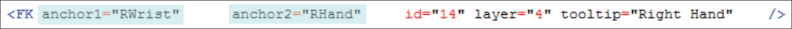
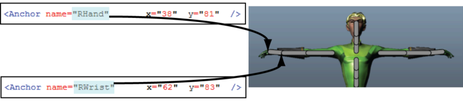

在 HumanIK“自定义绑定”(Custom Rig)界面上重新定位效应器
调整效应器的位置的步骤
查找要在配置文件中调整的效应器的名称，并找到其定位点。以下示例中的 FK 效应器具有两个定位点，名称分别为
RWrist
和
RHand
。

每个
<Anchor>
元素都有一组自己的 X 和 Y 坐标，与布局上的位置相对应。
更改定位点的坐标以适合工作流或动画绑定。以下示例显示了
RHand
和
RWrist
在
“自定义绑定”(Custom Rig)
布局中的位置。

相关主题
自定义 HumanIK 角色界面
父主题：
自定义 HumanIK 角色界面